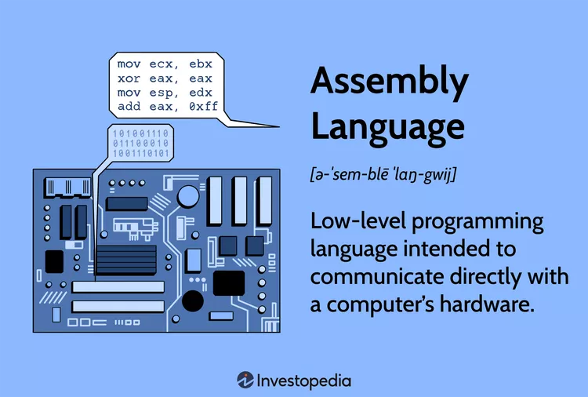

Assembly language, Low-level programming
Why is Assembly so hard to read?
- Assembly language is a low-level programming language that uses short words and symbols instead of binary.
- It is very close to computer hardware and requires understanding about how a CPU works
- Memory must be managed by the programmer
Common Uses
- Embedded Systems: Runs tiny computers inside everyday devices (yes, even your microwave).
- Operating Systems & Drivers: Helps your computer "talk" directly to hardware.
- Gaming & Graphics: Used to squeeze out extra speed for visuals, sound, and game physics.
- High Frequency Trading : leverage their speed advantage over high level languages for time-sensitive trades.
Assembly Example
section .data
msg db "Hello, world!", 0
section .text
global _start
_start:
; print message (very simplified)
mov eax, 4
mov ebx, 1
mov ecx, msg
mov edx, 13
int 0x80